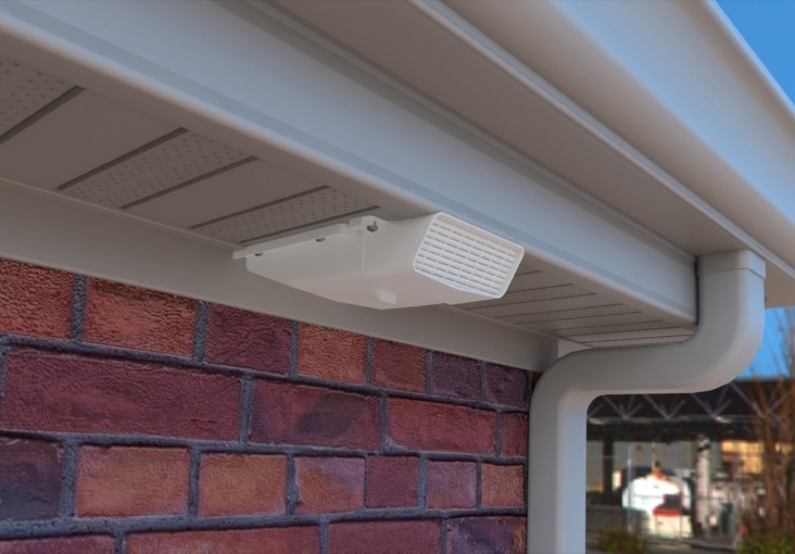

Stop attic mold before it starts.
Most soffit vents let a bathroom fan's moist exhaust air linger in the soffit, where it migrates into the attic and causes black mold and structural damage. PreVentIt's patented soffit vent moves that air all the way out of the house instead.
Get in touch →
The problem with how bath fans are vented today
Every soffit vent sold in the US and Canada over the past 40 years vents exhaust air into the soffit, not through it. That passive moist air sits in the soffit's air intake and migrates into the attic, where it condenses and causes black mold and moisture damage. Venting through the roof instead avoids the soffit, but isn't recommended either — roof penetrations are difficult to install correctly and are a common source of new roof leaks.
The International Code Council (ICC) requires that all bathroom exhaust fans be vented to the exterior of a structure and not recirculated within the home (IRC Chapter 15, Section M1507.2) — but most installations still leave moist air trapped in the soffit.
How PreVentIt works
PreVentIt's soffit vent has an adapted termination that, for the first time, gives builders and homeowners the ability to vent a bathroom exhaust fan effectively. The vent's nose sits past the exterior of the fascia, so exhausted air is fully displaced out of the house instead of re-entering the soffit's passive airflow — eliminating the pathway that lets moisture reach the attic and cause black mold and poor indoor air quality.


- Effective displacement of exhausted air, preventing it from re-entering the assembly
- Multiple points of escape for bulk moisture, should condensation occur
- Fits soffits ranging from 8″ to 48″
- Easy to install with a hole saw, screwdriver, 4½″ jubilee clamp, and a ladder
Why it matters
Sources: HGTV, mold remediation & removal costs · Medical News Today, black mold health effects
Independently tested performance
Measured with an Energy Conservatory DG-700 manometer and exhaust fan flow meter, using the same fan, transition duct, and attic, with both terminations tested under similar conditions about six hours apart.
Tested by Anneliese Khalil — BPI Building Analyst, BPI Healthy Homes Evaluator, RESNET HERs Rater, EPA ENERGY STAR v3 Verification Rater.
What people are saying
“I think this product is a fantastic idea as it removes the need to penetrate the roof for bath fans. Roof penetrations are dangerous to install and very often end up in new roof leaks… The moisture flow soffit vent system provides a new, simpler and likely more effective solution to this problem.”
Daryl Strom, PE — DSR Engineering, P.C.
“Your product effectively solves one of these long-standing problems: safely and effectively venting a bathroom exhaust fan to a soffit. The design will also eliminate the need for unsightly vents through the siding or roof… I fully support its use in residential new construction projects and existing home retrofits.”
Peter Grannage, Construction Manager — Heartstone Development
“I fully support its use in residential new construction projects and existing home retrofits. I would speculate that Pulte's Northeast Corridor Division would purchase approximately 2,000 vents per year for our residential new construction projects.”
Timothy Pacelli, Field Manager II — PulteGroup, Northeast Corridor Division

Getting to know the owner
Anneliese Khalil is a free-spirited and deeply thoughtful creator. She received a Master of Public Policy from Rutgers University and is a residential construction energy efficiency specialist. Through years of experience in the home building industry, Anneliese has developed a suite of patented products to promote better, safer, and more efficient practices. The soffit vent is her most complete product to date — it has already been installed on multiple homes in New Jersey, and the utility patent was awarded to Anneliese in August 2020.
“We empower homeowners to take care of the health of their home and their families, by offering products that keep their home safe. We are excited to launch PreVentIt Soffit Vents to make a difference in your life.”
Anneliese Khalil, Owner & Inventor
PreVentIt, LLC develops innovative products that prevent moisture damage and mold contamination caused by improper venting. Our pipeline of innovative products will make American homes safer for families and pets.
Get in touch
Questions about PreVentIt, interested in installing it, or want to carry it on a project? Send us a note.